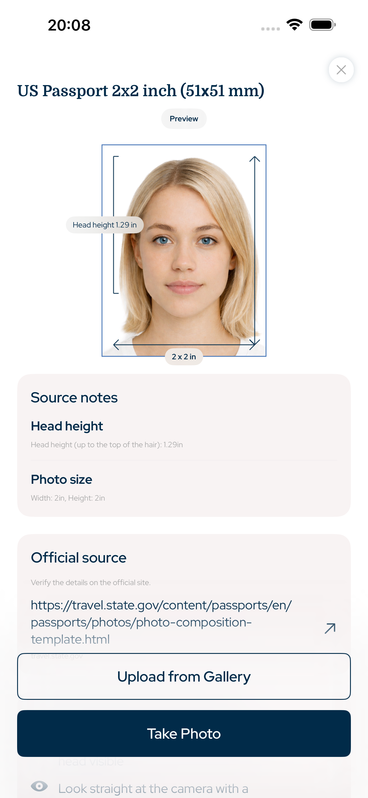

United States · US passport photo app, 2x2 passport photo, American passport photo, visa photo, ID photo maker
US passport photos sized for 2x2 inch requirements
Create US passport photos, visa photos and ID photos from iPhone with 2x2 inch export, guided head size, top padding, background checks and print-ready sheets.
- Face
- No AI alteration
- Crop
- Head + top padding
- Export
- Digital + print

Top padding
precise
Head proportion
guided
Searchable requirements
Built around official photo geometry
The app focuses on measurable document-photo rules: photo size, pixel export, head height, face position, top padding, background and print layout.
Head size and eye-line composition guidance
No AI facial alteration
Walgreens, CVS or home print sheet export
United States document types
Photos this app can prepare
US Passport Photo App covers common official photo workflows for iPhone users who need a digital upload file or a printable photo sheet.
US passport photo
US visa photo
Green card style photo
ID photo
2x2 inch print sheet
Photo integrity
No AI facial alterations
The workflow is intentionally practical: crop the image, align the head, preserve the face, prepare the background, then export the right size. It is made for official document photo preparation, not beauty retouching.
1Select country and document
2Align head and padding
3Export digital or print sheet
Questions
FAQ
Can this app make a 2x2 US passport photo?
Yes. Select the United States passport preset and export a 2x2 inch photo or a print sheet.
Does it change facial features?
No. It avoids AI face alteration and focuses on size, crop, background and export.
Can I print at a local store?
Yes. Export a print sheet and use a local photo print service or home printer.
US Passport Photo App
Make a US passport photo, visa photo or ID photo on iPhone with 2x2 inch sizing, head proportion, top padding and digital or print-ready export.
Download on the App Store